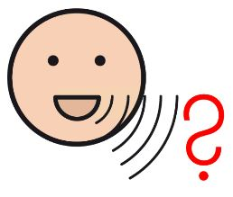

TESTUMGEBUNG
Herzlich willkommen am Studjo | Terminal
+++ NEU: Besseres "Wetter" für unsere Standorte +++ NEU: Allgemeine Nachrichten in Leichter Sprache +++ Wir freuen uns auf deine Rückmeldung zum Terminal +++ Matthias W. neue Vertrauensperson (SBV) +++
…
…
⏳
Jetzt …
…
…
☕
Als nächstes folgt …
…
…
Neuigkeiten bei Studjo
Termine
Speiseplan
Arbeitsbegleitende Angebote
Werkstattordnung und Regeln
Gewaltschutz
Arbeitssicherheit
Werkstattrat und Frauenbeauftragte
Info-Filme
Allgemeine Nachrichten
Wetter
Adressen und Fahrpläne

Häufige Fragen
Vorlesen